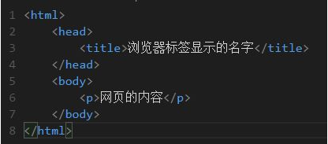

Javascript
JavaScript是一种属于网络的脚本语言,已经被广泛用于Web应用开发,常用来为网页添加各式各样的动态功能,为用户提供更流畅美观的浏览效果。通常JavaScript脚本是通过嵌入在HTML中来实现自身的功能的。
JavaScript的三大组成部分是：
1.ECMAScript：JavaScript的核心，描述了语言的基本语法(var、for、if、array等)和数据类型(数字（number）、字符串(string)、布尔(boolean)、函数、对象(obj、[]、{}、null)、未定义)，ECMAScript是一套标准，定义了一种语言（比如JS）是什么样子。
2.文档对象模型（DOM）：DOM（文档对象模型）是 HTML 和 XML 的应用程序接口（API）。DOM 把整个页面规划成由节点层级构成的文档。HTML 或 XML 页面的每个部分都是一个节点的衍生物。
DOM 就是针对 HTML 和 XML 提供的一个API。什么意思？就是说为了能以编程的方法操作这个 HTML 的内容（比如添加某些元素、修改元素的内容、删除某些元素），我们把这个 HTML 看做一个对象树（DOM树），它本身和里面的所有东西比如 <div></div>这些标签都看做一个对象，每个对象都叫做一个节点（node），节点可以理解为 DOM 中所有 Object 的父类。
什么是 DOM
可以把 DOM 看成节点

上图是一个 html 文件，也就是网页的结构。
- html 标签是一个节点（Node）。
- head、title、body、p 标签都是节点。
- 嵌套其他节点的节点叫做父节点。
- 被嵌套的节点叫做子节点。
- 同一个父节点下的节点叫做兄弟节点。
- 父亲的父亲以及上溯十八代祖宗叫做祖先节点。
- 儿子的儿子以及子子孙孙无穷匮也叫做后代节点。
DOM 有什么用
- 通过 DOM 你可以改变网页。
- 你可以使用 Javascript 语言来操作 DOM 以改变网页。
- 为了改变网页，你必须告诉 Javascript 改变哪一个节点。这就是操作 DOM。
3.浏览器对象模型（BOM）对浏览器窗口进行访问和操作。例如弹出新的浏览器窗口，移动、改变和关闭浏览器窗口，提供详细的网络浏览器信息（navigator object），详细的页面信息（location object），详细的用户屏幕分辨率的信息（screen object），对cookies的支持等等。BOM作为JavaScript的一部分并没有相关标准的支持，每一个浏览器都有自己的实现，虽然有一些非事实的标准，但还是给开发者带来一定的麻烦。
DOM 是为了操作文档出现的 API，document 是其的一个对象； BOM 是为了操作浏览器出现的 API，window 是其的一个对象
箭头函数语法
(参数1, 参数2, …, 参数N) => {函数声明}
(参数1, 参数2, …, 参数N) => 表达式（单一）
var materials = [
'Hydrogen',
'Helium',
'Lithium',
'Beryllium'
];
materials.map(function(material) {
return material.length;
}); // [8, 6, 7, 9]
//箭头函数
materials.map((material) => {
return material.length;
}); // [8, 6, 7, 9]
materials.map(material => material.length); // [8, 6, 7, 9]